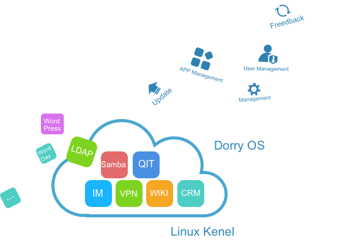

Functionalities

Update & Upgrade
DorryOS and enterprise applications can be updated and upgraded on the fly.
SSO
DorryOS provides Single-Sign-On to access to enterprise services.
Backup & Restore
DorryOS provides the service to backup and restore application data.
Micro Service Communication
Each executing enterprise application is considered as micro service. DorryOS handles the service communication.

Management
DorryOS provides user friendly interface to manipulate enterprise services on the fly.
Feedback
DorryOS reports application execution errors and exceptions.